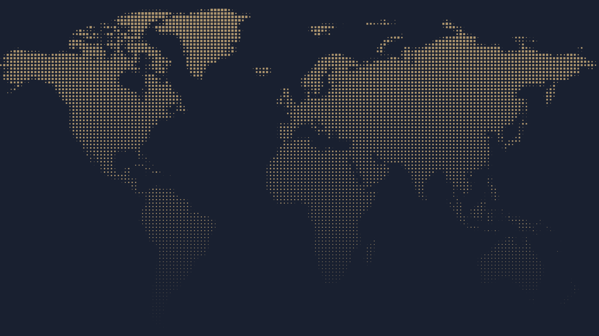
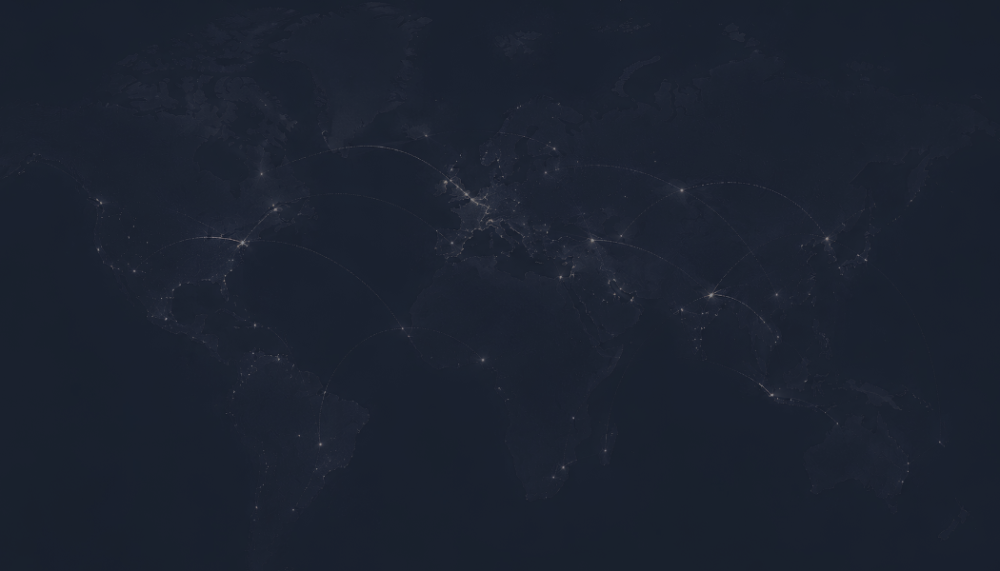

Insight packages
Structured intelligence to keep your leadership informed as conditions shift and opportunities open.
- Quarterly Risk Barometer
- Country briefs
- Corridor views and triggers to watch
- Interim alerts on material changes

A practitioner-led intelligence and advisory firm helping executives navigate geopolitical risk, identify opportunities, and make confident decisions in an uncertain world.
View the Risk BarometerPublished quarterly, with interim updates when conditions materially shift.
How we work with you
The Geoeconomic Strategy Unit is a practitioner-led, research-driven firm that translates the complexity of geopolitics and global economics into clear, actionable intelligence for business leaders.
We combine on-the-ground insight, policy analysis, and strategic experience to help you decide where to deploy capital, how to structure business models, and when to exercise strategic patience.
To improve capital mobility and unlock cross-border growth by highlighting risks, aligning incentives, and sequencing action across high-growth trade corridors.
We draw on long-standing relationships with ministries, investors, media, and corporations to translate analysis into financing structures and risk-mitigation strategies.
Three ways to engage, from structured intelligence to bespoke research for a single decision.
Structured intelligence to keep your leadership informed as conditions shift and opportunities open.
Direct engagement with your leadership team to translate intelligence into concrete decisions and governance steps.
Bespoke deep-dives for specific deals, corridors, or investment decisions.
A proprietary quantitative tool that gives you a view of investment potential across global markets. Drawing on large language models, we continuously process economic signals to deliver Risk-Adjusted Opportunity scores on demand.
The first of four pillars that build the composite score.
The second pillar. Each pillar is scored separately before the composite is formed.
Continuous monitoring of World Bank data, Central Bank feeds, and global news outlets.
The third pillar, read alongside the others rather than on its own.
The fourth pillar. Significant score movements trigger a mandatory review by our human experts.
Delivered on demand as conditions change, and read with the Barometer's country briefs.
Beyond country-level data, our system allows for on-demand, sector-specific scoring. Whether you are in fintech, renewable energy, or mining, we filter data to isolate the regulatory environments and supply chain risks that matter specifically to your industry.
We start with analysis; we finish with decisions.
Global business risk has changed in character. Cross-border supply chains, capital flows, and trade corridors now propagate shocks faster and with fewer warning signs than most corporate planning cycles were designed for. This paper sets out how the GSU delivers intelligence at the intersection of geopolitics, economics, and market execution.
Strategic briefs from the team, and the video channel.
The analysts, engineers and strategists behind the work. [Roster pending confirmation: departures to remove, partners to add]

Holds a Master’s in International Political Economy from King’s College London. His experience spans financial services, strategic advisory, and diplomacy, informing the GSU’s institutional strategy and client engagements.

Holds a BTech in Computer Science Engineering with a specialisation in AI and Machine Learning from Woxsen University. At the GSU, he leads the unit’s technological infrastructure, digital strategy, and data-driven intelligence platforms.

Pursuing an MA in International Political Economy at King’s College London, with interests in monetary systems, capital flows, and financial stability. As Chief Data Officer, he builds the quantitative frameworks and analytical systems that underpin the GSU’s country risk and opportunity assessments.

Holds an MSc in Politics and International Relations from SOAS University of London. As Operations Lead, she oversees the GSU’s day-to-day operations and organisational strategy, with research interests spanning South Asian politics, geoeconomics, and regional security.

Pursuing an MSc in International Relations at the London School of Economics, with a focus on international development, geoeconomics, and conflict studies. As Marketing and Outreach Head, she leads the GSU’s brand identity and communications strategy across all outputs.

As Chief Strategy Officer, he leads the GSU’s Strategic vertical with a focus on business development and market entry across high-growth markets. His work spans regulatory navigation and investment sequencing, with a geographic focus on India, the GCC, Sub-Saharan Africa, and Latin America.

Holds an MSc in International Public Policy from University College London and a BA in Economics. At the GSU, she leads the Research vertical, contributing to geopolitical research and strategic policy analysis, with interests in global governance and emerging markets.

Studying International Relations and Economics at Ashoka University. She contributes to policy research and strategic market analysis at the GSU, with a focus on crafting clear, insight-driven narratives.

Holds an MA in International Relations from King’s College London. His work focuses on public–private sector collaboration, policy engagement, and sustainability, examining how regulatory frameworks and political risk shape strategic decision-making.

Holds an MSc in Financial Economics and brings two years of experience as an analyst at Goldman Sachs. At the GSU, she works as a Research Analyst with interests in geoeconomics and macroeconomic developments, with a particular focus on emerging markets.

Holds a Master’s in International Relations and Global Security from Sapienza University of Rome. She specialises in geopolitical analysis, OSINT research, and international security, bringing a multidisciplinary perspective to the study of global risk and strategic dynamics.

Holds a Master’s in Global Political Economy from Leiden University and a degree in Politics and Sociology from UCL. At the GSU, he is a Research Analyst and podcast co-host, with expertise in Pakistan’s political economy and prior experience at a UK think tank and in retail investment.

Contributes to policy briefs and geoeconomic trend analysis through the GSU’s Europe Programme. He brings extensive experience in international development and sustainability strategy.

An AI engineer with expertise in building intelligent applications that address complex, real-world challenges. At the GSU, he contributes to the development of AI-driven tools and analytical systems.
[Bio, photo and LinkedIn to be supplied]
[Bio, photo and LinkedIn to be supplied]
Institutions we work alongside to extend our reach and deepen our expertise across geographies and sectors.
[Partner description, logo and link to be supplied]
[Partner description, logo and link to be supplied]
Organisations we have worked with.
A leader in maritime logistics, providing robust supply chain solutions across global trade routes and marine engineering.
A mutual fund distributor and investment advisory service, helping clients build long-term wealth.

A producer of next-generation battery materials, developing indigenous lithium-ion chemistries and supply chains.
An apex trade and technology chamber promoting bilateral trade between India and countries across the globe, connecting industry leaders through business delegations and B2B engagements.
Interested in bespoke strategic advice? Write to us and we will come back to you.
Research desk: [Research email]
Telephone: [Phone]
Office: [New office address]